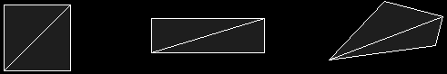
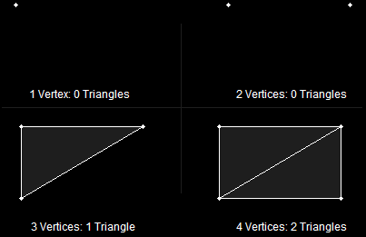
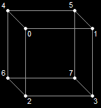
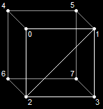
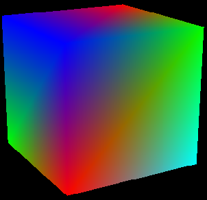
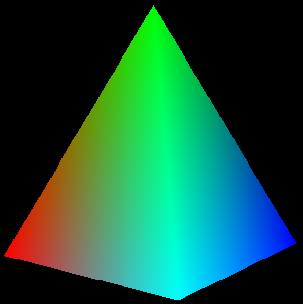
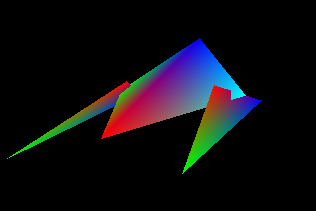
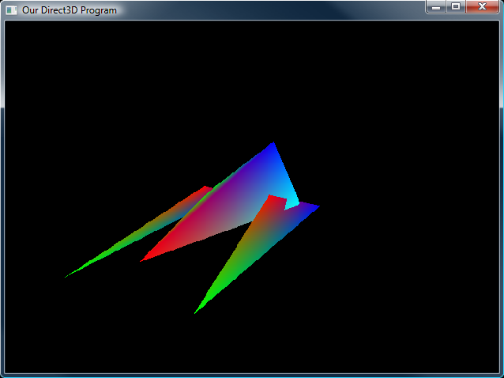

So
far we have only built single triangles. Sometimes (such as in the
last lesson) we have gotten advanced and drawn two triangles, but they
were not connected.
3D models are made out of many triangles
connected together to form geometry. In this lesson, we will cover how
to build some simple geometry out of triangles, and how to move them,
rotate them and size them as a whole.
Quad, as we should all know, means four. In geometry, a quad is a four-sided shape of any kind. The following are each quads.
Various QuadsEarlier
I said that triangles make up all shapes in a 3D world. If you look
carefully, each of these quads is made up of two triangles placed side
by side.

Quads Are Dual TrianglesAs
a matter of fact, this is true of all quads, regardless of shape.
These two triangles combined can make quite a variety of useful shapes
in game programming, such as building terrain, walls, boxes, and any
other shape with four sides.
The prime question is, how do you
make them? We are already familiar with building triangles, so now
let's look at how that code could be changed to draw a square instead.
First, let's look at the init_graphics() function we were using earlier.
This time, it has been changed to represent a quad, rather than a
triangle. Notice there are four points here. The changes, as usual,
are in bold.
// this is the function that puts the 3D models into video RAM
void init_graphics(void)
{
// create the vertices using the CUSTOMVERTEX struct
CUSTOMVERTEX vertices[] =
{
{ -3.0f, 3.0f, 0.0f, D3DCOLOR_XRGB(0, 0, 255), },
{ 3.0f, 3.0f, 0.0f, D3DCOLOR_XRGB(0, 255, 0), },
{ -3.0f, -3.0f, 0.0f, D3DCOLOR_XRGB(255, 0, 0), },
{ 3.0f, -3.0f, 0.0f, D3DCOLOR_XRGB(0, 255, 255), },
};
// create a vertex buffer interface called i_buffer
d3ddev->CreateVertexBuffer(4*sizeof(CUSTOMVERTEX), // change to 4, instead of 3
0,
CUSTOMFVF,
D3DPOOL_MANAGED,
&v_buffer,
NULL);
VOID* pVoid; // a void pointer
// lock v_buffer and load the vertices into it
v_buffer->Lock(0, 0, (void**)&pVoid, 0);
memcpy(pVoid, vertices, sizeof(vertices));
v_buffer->Unlock();
return;
}
Now
we have a full square in memory. Now how do we show it? Let's take a
look at the code that draws them from the render_frame() function.
d3ddev->SetStreamSource(0, v_buffer, 0, sizeof(CUSTOMVERTEX));
d3ddev->DrawPrimitive(D3DPT_TRIANGLESTRIP, 0, 2);
Of
course, there is also code to set up the pipeline, but that isn't
relevant here. What is relevant is what is different about the
DrawPrimitive() function. Notice that the first parameter now says
D3DPT_TRIANGLESTRIP rather than D3DPT_TRIANGLELIST. Also notice that
the third parameter was changed to a 2.
In case you are foggy on
what each of these parameters do, the first parameter says what kind of
primitive is being drawn, the second parameter says what vertex in the
buffer should be started with (0 is the first vertex), and the third
parameter says how many primitives should be drawn. In a triangle
strip, the primitives are triangles, so a 2 means show up to 2
triangles, and stop. Well, that's the end of the vertex buffer anyway,
but if we had put a 1 here, it would have stopped at one triangle. This
is illustrated here:

Making TrianglesAnd that's all there is to building a quad! Now let's combine our quads to make a cube, our first 3D model!
It
doesn't really make sense to create four vertices for every quad. If
we made a cube, it would end up using twenty-four vertices, while it
would really only have eight vertex positions. It would truly be easier
if we could create eight vertices, then combine them to make six quads.
Well we can do this, and it does make creating simple models in code much easier. The solution is the index buffer.
In DirectX, an index is an int
storing the number of a vertex. They are given in order, so the first
vertex in a buffer is vertex number 0, the second is vertex number 1,
the third is 2, and so on.
And index buffer is a buffer in
memory that stores the order in which vertices should be rendered.
Instead of storing a long list of coordinates, it instead stores a long
list containing indexes (or indices).
Let's learn by example.
Here we have eight corners of a cube. Each corner has a coordinate in space, but is labeled with an index number.

A Cube Made of Eight IndicesWe
make this by building a vertex buffer with eight different vertices,
each representing one corner of the cube, including its coordinates and
color.
CUSTOMVERTEX vertices[] =
{
{ -3.0f, 3.0f, -3.0f, D3DCOLOR_XRGB(0, 0, 255), }, // vertex 0
{ 3.0f, 3.0f, -3.0f, D3DCOLOR_XRGB(0, 255, 0), }, // vertex 1
{ -3.0f, -3.0f, -3.0f, D3DCOLOR_XRGB(255, 0, 0), }, // 2
{ 3.0f, -3.0f, -3.0f, D3DCOLOR_XRGB(0, 255, 255), }, // 3
{ -3.0f, 3.0f, 3.0f, D3DCOLOR_XRGB(0, 0, 255), }, // ...
{ 3.0f, 3.0f, 3.0f, D3DCOLOR_XRGB(255, 0, 0), },
{ -3.0f, -3.0f, 3.0f, D3DCOLOR_XRGB(0, 255, 0), },
{ 3.0f, -3.0f, 3.0f, D3DCOLOR_XRGB(0, 255, 255), },
};
However,
this doesn't create any triangles or quads, just corners. To build a
triangle, we simply refer to three indices in a row. If we used "0, 1,
2" and "2, 1, 3", we would get these two triangles. Notice that we
could do the same to each side of the cube, making one quad for each.

Two Triangles on the CubeBefore
we say which indices we want to use, we need to make an index buffer,
so let's build one. We do this using a function called
CreateIndexBuffer().
HRESULT CreateIndexBuffer(
UINT Length,
DWORD Usage,
D3DFORMAT Format,
D3DPOOL Pool,
LPDIRECT3DINDEXBUFFER9 ppIndexBuffer,
HANDLE* pSharedHandle);
This
is almost exactly the same as CreateVertexBuffer(). Only one parameter
is different, but let's go ahead and look at them all briefly.
This
is the size of the buffer. Each index is stored in an int or a short.
For compatibility reasons, we'll use short, so this will sizeof(short)
multiplied by the number of indices you want to use.
Just as before, we won't get into this parameter, but set it to 0.
This
parameter is new. Here we can put flags to tell DirectX how much space
in memory we will give to each index. It can be D3DFMT_INDEX16 or
D3DFMT_INDEX32. With 16, the indices will go to the video card twice as
fast. However, you can only have up to 65536 indices. Occasionally
you will need more than this. For our example, we will use
D3DFMT_INDEX16, because not all video cards support 32-bits per index.
This
is the same as with the vertex buffer. It tells DirectX where to store
this buffer. As before, we'll use D3DPOOL_MANAGED, meaning it will be
located in video memory.
This
is the pointer to the index buffer we'll create. We put a blank
pointer in, and CreateIndexBuffer() will fill it in for us so we can
refer to it later.
As with the vertex buffer, we'll set this to NULL.
For the most part, this function appears the same. There are only a few, small differences.
LPDIRECT3DINDEXBUFFER9 i_buffer;
d3ddev->CreateIndexBuffer(36*sizeof(short), // 3 per triangle, 12 triangles
0,
D3DFMT_INDEX16,
D3DPOOL_MANAGED,
&i_buffer,
NULL);
Just
as with the vertex buffer, we need to build an array of indices then
copy the indices into the index buffer. It's done exactly the same way:
// create the indices using an int array
short indices[] =
{
0, 1, 2, // side 1
2, 1, 3,
4, 0, 6, // side 2
6, 0, 2,
7, 5, 6, // side 3
6, 5, 4,
3, 1, 7, // side 4
7, 1, 5,
4, 5, 0, // side 5
0, 5, 1,
3, 7, 2, // side 6
2, 7, 6,
};
// create an index buffer interface called i_buffer
d3ddev->CreateIndexBuffer(36*sizeof(short),
0,
D3DFMT_INDEX16,
D3DPOOL_MANAGED,
&i_buffer,
NULL);
// lock i_buffer and load the indices into it
i_buffer->Lock(0, 0, (void**)&pVoid, 0);
memcpy(pVoid, indices, sizeof(indices));
i_buffer->Unlock();
And if you put the whole thing together:
// this is the function that puts the 3D models into video RAM
void init_graphics(void)
{
// create the vertices using the CUSTOMVERTEX struct
CUSTOMVERTEX vertices[] =
{
{ -3.0f, 3.0f, -3.0f, D3DCOLOR_XRGB(0, 0, 255), },
{ 3.0f, 3.0f, -3.0f, D3DCOLOR_XRGB(0, 255, 0), },
{ -3.0f, -3.0f, -3.0f, D3DCOLOR_XRGB(255, 0, 0), },
{ 3.0f, -3.0f, -3.0f, D3DCOLOR_XRGB(0, 255, 255), },
{ -3.0f, 3.0f, 3.0f, D3DCOLOR_XRGB(0, 0, 255), },
{ 3.0f, 3.0f, 3.0f, D3DCOLOR_XRGB(255, 0, 0), },
{ -3.0f, -3.0f, 3.0f, D3DCOLOR_XRGB(0, 255, 0), },
{ 3.0f, -3.0f, 3.0f, D3DCOLOR_XRGB(0, 255, 255), },
};
// create a vertex buffer interface called v_buffer
d3ddev->CreateVertexBuffer(8*sizeof(CUSTOMVERTEX),
0,
CUSTOMFVF,
D3DPOOL_MANAGED,
&v_buffer,
NULL);
VOID* pVoid; // a void pointer
// lock v_buffer and load the vertices into it
v_buffer->Lock(0, 0, (void**)&pVoid, 0);
memcpy(pVoid, vertices, sizeof(vertices));
v_buffer->Unlock();
// create the indices using an int array
short indices[] =
{
0, 1, 2, // side 1
2, 1, 3,
4, 0, 6, // side 2
6, 0, 2,
7, 5, 6, // side 3
6, 5, 4,
3, 1, 7, // side 4
7, 1, 5,
4, 5, 0, // side 5
0, 5, 1,
3, 7, 2, // side 6
2, 7, 6,
};
// create an index buffer interface called i_buffer
d3ddev->CreateIndexBuffer(36*sizeof(short),
0,
D3DFMT_INDEX16,
D3DPOOL_MANAGED,
&i_buffer,
NULL);
// lock i_buffer and load the indices into it
i_buffer->Lock(0, 0, (void**)&pVoid, 0);
memcpy(pVoid, indices, sizeof(indices));
i_buffer->Unlock();
}
So
how do we draw all this? It's pretty simple, but it needs some new
functions. Here's the drawing code. This comes after all the
transforms are set and before EndScene() is called.
// select the vertex and index buffers to use
d3ddev->SetStreamSource(0, v_buffer, 0, sizeof(CUSTOMVERTEX));
d3ddev->SetIndices(i_buffer);
// draw the cube
d3ddev->DrawIndexedPrimitive(D3DPT_TRIANGLELIST, 0, 0, 8, 0, 12);
This is exactly the same as before. All it does is tell Direct3D which vertex buffer we are drawing from.
This function is similar, but much simpler. It's purpose is to set the index buffer we will use.
It
has one parameter, the address of the index buffer. We only have one
index buffer, so the parameter will be i_buffer. Remember that i_buffer
is already a pointer, so we don't put &i_buffer.
This
one is quite different than DrawPrimitive(). It essentially does the
same thing, but it only draws shapes using an index buffer. Here's the
prototype:
HRESULT DrawIndexedPrimitive(D3DPRIMITIVETYPE Type,
INT BaseVertexIndex,
UINT MinIndex,
UINT NumVertices,
UINT StartIndex,
UINT PrimitiveCount);
The
first parameter is familiar to us. It's the style of drawing, such as
triangle strips, or line lists. We're going to use D3DPT_TRIANGLELIST,
because each set of three indices represents a whole triangle.
The
second parameter tells how many vertices into the buffer we want to
start. We're going to put 0 here, but just so you get what this is,
let's take a simple example. If we put 4 here, then index 0 would point
to vertex 4, index 1 would point to vertex 5, and so on.
The
next number is the lowest index we'll use. We want 0, so we'll put 0.
It's really just a hint to Direct3D on how to best optimize memory for
us behind the scenes.
The fourth parameter is the number of vertices we'll use. We use 8 in the cube. Again, this helps Direct3D with optimization.
The
fifth parameter tells DirectX where to start on the index buffer. This
is used for more complicated situations where you have more than one
shape stored in a single index buffer. For example, if we had a cube
take up spaces 0 to 35, and a completely different shape take from 36 to
51, we could put 36 in this parameter, and DirectX would know where to
start reading on the buffer. We aren't doing this, so we'll set it to
0, the beginning of the index buffer.
The last parameter is the number of triangles we will draw. This cube draws twelve, two for each side.
If
you take the new code and put it into your program, you'll get a nice
rotating cube (provided you still have the right transforms there).
Here's a picture of a cube I got with one transform:

A Rotating CubeTry building the cube in your program and spinning it in various ways.
Well,
I don't know about you, but I'm really excited! We've built our first
3D object for real! Let's look at a couple more simple models we can
make using quads and triangles.
Let's look at how to build this shape.

A Square PyramidHere is the code for the vertex buffer:
// create the vertices using the CUSTOMVERTEX
struct CUSTOMVERTEX vertices[] =
{
// base
{ -3.0f, 0.0f, 3.0f, D3DCOLOR_XRGB(0, 255, 0), },
{ 3.0f, 0.0f, 3.0f, D3DCOLOR_XRGB(0, 0, 255), },
{ -3.0f, 0.0f, -3.0f, D3DCOLOR_XRGB(255, 0, 0), },
{ 3.0f, 0.0f, -3.0f, D3DCOLOR_XRGB(0, 255, 255), },
// top
{ 0.0f, 7.0f, 0.0f, D3DCOLOR_XRGB(0, 255, 0), },
};
// create a vertex buffer interface called v_buffer
d3ddev->CreateVertexBuffer(5*sizeof(CUSTOMVERTEX),
0,
CUSTOMFVF,
D3DPOOL_MANAGED,
&v_buffer,
NULL);
And for the index buffer:
// create the indices using an int array
short indices[] =
{
0, 2, 1, // base
1, 2, 3,
0, 1, 4, // sides
1, 3, 4,
3, 2, 4,
2, 0, 4,
};
// create a index buffer interface called i_buffer
d3ddev->CreateIndexBuffer(18*sizeof(short),
0,
D3DFMT_INDEX16,
D3DPOOL_MANAGED,
&i_buffer,
NULL);
And then to draw the shape:
// select the vertex buffer to display
d3ddev->SetStreamSource(0, v_buffer, 0, sizeof(CUSTOMVERTEX));
d3ddev->SetIndices(i_buffer);
// draw the pyramid
d3ddev->DrawIndexedPrimitive(D3DPT_TRIANGLELIST, 0, 0, 5, 0, 6);
Take a moment to study how this code differs from the cube's.
Now
let's do something a little bit more exciting. We'll take a break from
boring geometry and get into some real stuff. Let's build a
"Hypercraft", which is a ship from the first 3D game I ever wrote (and
I've used ever since). Here's what this ship looks like:

The HypercraftHere's the code for the vertex buffer:
// create the vertices using the CUSTOMVERTEX
struct CUSTOMVERTEX vertices[] =
{
// fuselage
{ 3.0f, 0.0f, 0.0f, D3DCOLOR_XRGB(0, 255, 0), },
{ 0.0f, 3.0f, -3.0f, D3DCOLOR_XRGB(0, 0, 255), },
{ 0.0f, 0.0f, 10.0f, D3DCOLOR_XRGB(255, 0, 0), },
{ -3.0f, 0.0f, 0.0f, D3DCOLOR_XRGB(0, 255, 255), },
// left gun
{ 3.2f, -1.0f, -3.0f, D3DCOLOR_XRGB(0, 0, 255), },
{ 3.2f, -1.0f, 11.0f, D3DCOLOR_XRGB(0, 255, 0), },
{ 2.0f, 1.0f, 2.0f, D3DCOLOR_XRGB(255, 0, 0), },
// right gun
{ -3.2f, -1.0f, -3.0f, D3DCOLOR_XRGB(0, 0, 255), },
{ -3.2f, -1.0f, 11.0f, D3DCOLOR_XRGB(0, 255, 0), },
{ -2.0f, 1.0f, 2.0f, D3DCOLOR_XRGB(255, 0, 0), },
};
// create a vertex buffer interface called v_buffer
d3ddev->CreateVertexBuffer(10*sizeof(CUSTOMVERTEX),
0,
CUSTOMFVF,
D3DPOOL_MANAGED,
&v_buffer,
NULL);
And for the index buffer:
// create the indices using an int array
short indices[] =
{
0, 1, 2, // fuselage
2, 1, 3,
3, 1, 0,
0, 2, 3,
4, 5, 6, // wings
7, 8, 9,
};
// create a index buffer interface called i_buffer
d3ddev->CreateIndexBuffer(18*sizeof(short),
0,
D3DFMT_INDEX16,
D3DPOOL_MANAGED,
&i_buffer,
NULL);
And then to draw the shape:
// select the vertex buffer to display
d3ddev->SetStreamSource(0, v_buffer, 0, sizeof(CUSTOMVERTEX));
d3ddev->SetIndices(i_buffer);
// draw the Hypercraft
d3ddev->DrawIndexedPrimitive(D3DPT_TRIANGLELIST, 0, 0, 10, 0, 6);
And
there you have it! We've got a functioning 3D model of a spaceship.
Admittedly it could improve a little on the aerodynamics, but we'll get
there for sure. For now, let's put in a rotation matrix and see what
she looks like.
I
chose to use the Hypercraft model for this demo. It rotates around
much like a car advertisement, only it looks somewhat more polygonal
than an actual car.
[
Main.cpp]
// include the basic windows header files and the Direct3D header file
#include <windows.h>
#include <windowsx.h>
#include <d3d9.h>
#include <d3dx9.h>
// define the screen resolution
#define SCREEN_WIDTH 800
#define SCREEN_HEIGHT 600
// include the Direct3D Library files
#pragma comment (lib, "d3d9.lib")
#pragma comment (lib, "d3dx9.lib")
// global declarations
LPDIRECT3D9 d3d;
LPDIRECT3DDEVICE9 d3ddev;
LPDIRECT3DVERTEXBUFFER9 v_buffer = NULL; // the pointer to the vertex buffer
LPDIRECT3DINDEXBUFFER9 i_buffer = NULL; // the pointer to the index buffer
// function prototypes
void initD3D(HWND hWnd);
void render_frame(void);
void cleanD3D(void);
void init_graphics(void);
struct CUSTOMVERTEX {FLOAT X, Y, Z; DWORD COLOR;};
#define CUSTOMFVF (D3DFVF_XYZ | D3DFVF_DIFFUSE)
// the WindowProc function prototype
LRESULT CALLBACK WindowProc(HWND hWnd, UINT message, WPARAM wParam, LPARAM lParam);
// the entry point for any Windows program
int WINAPI WinMain(HINSTANCE hInstance,
HINSTANCE hPrevInstance,
LPSTR lpCmdLine,
int nCmdShow)
{
HWND hWnd;
WNDCLASSEX wc;
ZeroMemory(&wc, sizeof(WNDCLASSEX));
wc.cbSize = sizeof(WNDCLASSEX);
wc.style = CS_HREDRAW | CS_VREDRAW;
wc.lpfnWndProc = WindowProc;
wc.hInstance = hInstance;
wc.hCursor = LoadCursor(NULL, IDC_ARROW);
wc.lpszClassName = L"WindowClass";
RegisterClassEx(&wc);
hWnd = CreateWindowEx(NULL, L"WindowClass", L"Our Direct3D Program",
WS_OVERLAPPEDWINDOW, 0, 0, SCREEN_WIDTH, SCREEN_HEIGHT,
NULL, NULL, hInstance, NULL);
ShowWindow(hWnd, nCmdShow);
initD3D(hWnd);
MSG msg;
while(TRUE)
{
while(PeekMessage(&msg, NULL, 0, 0, PM_REMOVE))
{
TranslateMessage(&msg);
DispatchMessage(&msg);
}
if(msg.message == WM_QUIT)
break;
render_frame();
}
cleanD3D();
return msg.wParam;
}
// this is the main message handler for the program
LRESULT CALLBACK WindowProc(HWND hWnd, UINT message, WPARAM wParam, LPARAM lParam)
{
switch(message)
{
case WM_DESTROY:
{
PostQuitMessage(0);
return 0;
} break;
}
return DefWindowProc (hWnd, message, wParam, lParam);
}
// this function initializes and prepares Direct3D for use
void initD3D(HWND hWnd)
{
d3d = Direct3DCreate9(D3D_SDK_VERSION);
D3DPRESENT_PARAMETERS d3dpp;
ZeroMemory(&d3dpp, sizeof(d3dpp));
d3dpp.Windowed = TRUE;
d3dpp.SwapEffect = D3DSWAPEFFECT_DISCARD;
d3dpp.hDeviceWindow = hWnd;
d3dpp.BackBufferFormat = D3DFMT_X8R8G8B8;
d3dpp.BackBufferWidth = SCREEN_WIDTH;
d3dpp.BackBufferHeight = SCREEN_HEIGHT;
d3dpp.EnableAutoDepthStencil = TRUE;
d3dpp.AutoDepthStencilFormat = D3DFMT_D16;
d3d->CreateDevice(D3DADAPTER_DEFAULT,
D3DDEVTYPE_HAL,
hWnd,
D3DCREATE_SOFTWARE_VERTEXPROCESSING,
&d3dpp,
&d3ddev);
init_graphics();
d3ddev->SetRenderState(D3DRS_LIGHTING, FALSE); // turn off the 3D lighting
d3ddev->SetRenderState(D3DRS_CULLMODE, D3DCULL_NONE); // turn off culling
d3ddev->SetRenderState(D3DRS_ZENABLE, TRUE); // turn on the z-buffer
}
// this is the function used to render a single frame
void render_frame(void)
{
d3ddev->Clear(0, NULL, D3DCLEAR_TARGET, D3DCOLOR_XRGB(0, 0, 0), 1.0f, 0);
d3ddev->Clear(0, NULL, D3DCLEAR_ZBUFFER, D3DCOLOR_XRGB(0, 0, 0), 1.0f, 0);
d3ddev->BeginScene();
d3ddev->SetFVF(CUSTOMFVF);
// set the view transform
D3DXMATRIX matView; // the view transform matrix
D3DXMatrixLookAtLH(&matView,
&D3DXVECTOR3 (0.0f, 8.0f, 25.0f), // the camera position
&D3DXVECTOR3 (0.0f, 0.0f, 0.0f), // the look-at position
&D3DXVECTOR3 (0.0f, 1.0f, 0.0f)); // the up direction
d3ddev->SetTransform(D3DTS_VIEW, &matView); // set the view transform to matView
// set the projection transform
D3DXMATRIX matProjection; // the projection transform matrix
D3DXMatrixPerspectiveFovLH(&matProjection,
D3DXToRadian(45), // the horizontal field of view
(FLOAT)SCREEN_WIDTH / (FLOAT)SCREEN_HEIGHT, // aspect ratio
1.0f, // the near view-plane
100.0f); // the far view-plane
d3ddev->SetTransform(D3DTS_PROJECTION, &matProjection); // set the projection
// set the world transform
static float index = 0.0f; index+=0.03f; // an ever-increasing float value
D3DXMATRIX matRotateY; // a matrix to store the rotation for each triangle
D3DXMatrixRotationY(&matRotateY, index); // the rotation matrix
d3ddev->SetTransform(D3DTS_WORLD, &(matRotateY)); // set the world transform
// select the vertex buffer to display
d3ddev->SetStreamSource(0, v_buffer, 0, sizeof(CUSTOMVERTEX));
d3ddev->SetIndices(i_buffer);
// draw the Hypercraft
d3ddev->DrawIndexedPrimitive(D3DPT_TRIANGLELIST, 0, 0, 10, 0, 6);
d3ddev->EndScene();
d3ddev->Present(NULL, NULL, NULL, NULL);
}
// this is the function that cleans up Direct3D and COM
void cleanD3D(void)
{
v_buffer->Release();
i_buffer->Release();
d3ddev->Release();
d3d->Release();
}
// this is the function that puts the 3D models into video RAM
void init_graphics(void)
{
// create the vertices using the CUSTOMVERTEX
struct CUSTOMVERTEX vertices[] =
{
// fuselage
{ 3.0f, 0.0f, 0.0f, D3DCOLOR_XRGB(0, 255, 0), },
{ 0.0f, 3.0f, -3.0f, D3DCOLOR_XRGB(0, 0, 255), },
{ 0.0f, 0.0f, 10.0f, D3DCOLOR_XRGB(255, 0, 0), },
{ -3.0f, 0.0f, 0.0f, D3DCOLOR_XRGB(0, 255, 255), },
// left gun
{ 3.2f, -1.0f, -3.0f, D3DCOLOR_XRGB(0, 0, 255), },
{ 3.2f, -1.0f, 11.0f, D3DCOLOR_XRGB(0, 255, 0), },
{ 2.0f, 1.0f, 2.0f, D3DCOLOR_XRGB(255, 0, 0), },
// right gun
{ -3.2f, -1.0f, -3.0f, D3DCOLOR_XRGB(0, 0, 255), },
{ -3.2f, -1.0f, 11.0f, D3DCOLOR_XRGB(0, 255, 0), },
{ -2.0f, 1.0f, 2.0f, D3DCOLOR_XRGB(255, 0, 0), },
};
// create a vertex buffer interface called v_buffer
d3ddev->CreateVertexBuffer(10*sizeof(CUSTOMVERTEX),
0,
CUSTOMFVF,
D3DPOOL_MANAGED,
&v_buffer,
NULL);
VOID* pVoid; // a void pointer
// lock v_buffer and load the vertices into it
v_buffer->Lock(0, 0, (void**)&pVoid, 0);
memcpy(pVoid, vertices, sizeof(vertices));
v_buffer->Unlock();
// create the indices using an int array
short indices[] =
{
0, 1, 2, // fuselage
2, 1, 3,
3, 1, 0,
0, 2, 3,
4, 5, 6, // wings
7, 8, 9,
};
// create a index buffer interface called i_buffer
d3ddev->CreateIndexBuffer(18*sizeof(short),
0,
D3DFMT_INDEX16,
D3DPOOL_MANAGED,
&i_buffer,
NULL);
// lock i_buffer and load the indices into it
i_buffer->Lock(0, 0, (void**)&pVoid, 0);
memcpy(pVoid, indices, sizeof(indices));
i_buffer->Unlock();
}
Run the code, and see the family vehicle of the future! Well, maybe the virtual future. Well, maybe not...

The Hypercraft In Action Wow!
Now we are getting somewhere with 3D! Get good at everything up to
this point, and then let's move on and make the Hypercraft look decent
with some 3D lighting. In the meantime, try doing these exercises:
1. Make a square
2. Make a triangular pyramid
3. Draw 20 copies of your triangular pyramid on the screen at once
4. Add a tail fin in the back of the Hypercraft
5. Design and build your own mini-spaceship
Now let's get on to lighting! Let's make these objects look cool!
Next Lesson: Rendering with Vertex Lighting
GO! GO! GO!
© 2006-2017 DirectXTutorial.com. All Rights Reserved.
Expand